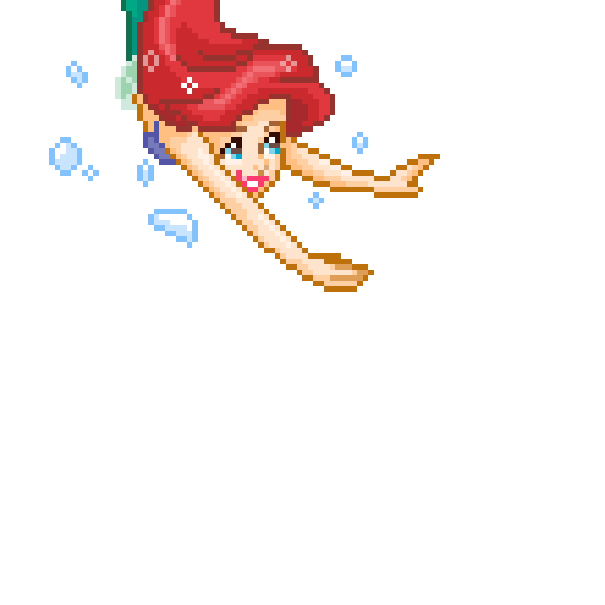
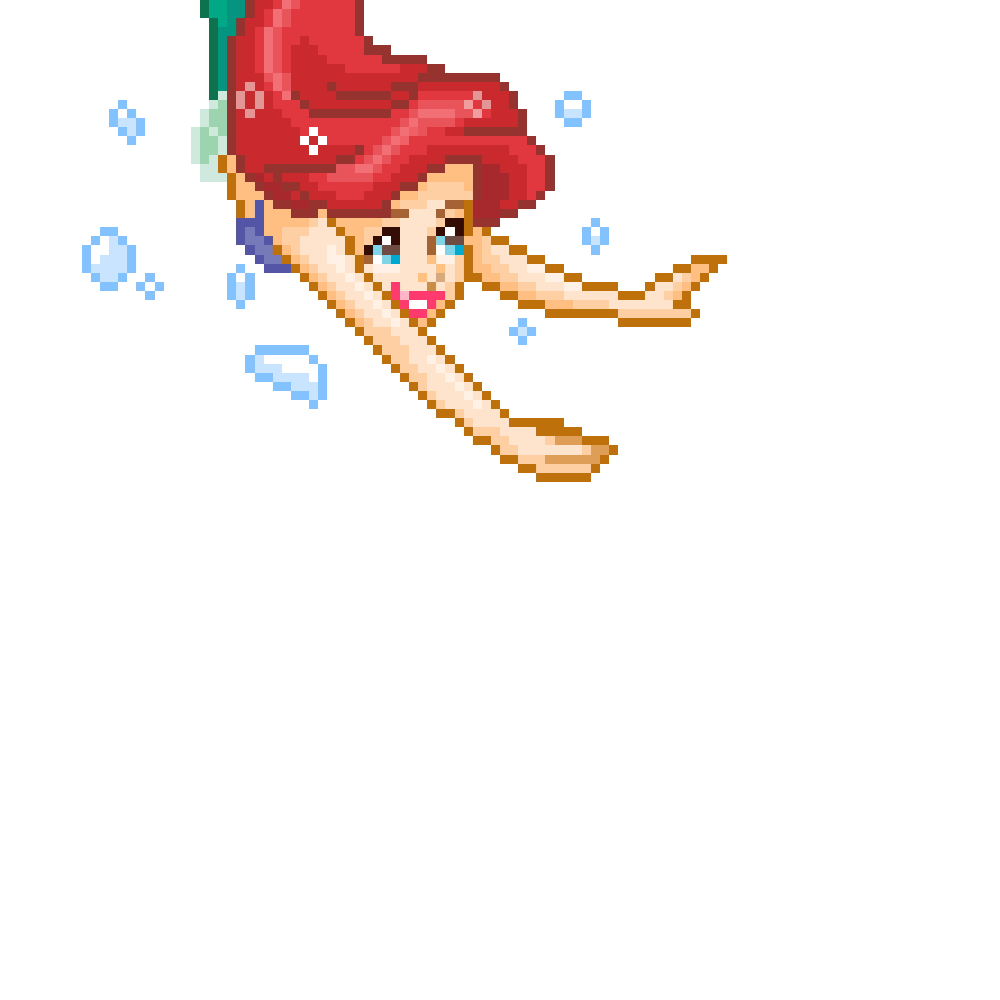

Seja bem-vindo(a) ao Fundo do Mar!
Aqui, a magia do fundo do mar se encontra com a nostalgia de uma história que marcou gerações.
Para mim,
A Pequena Sereia não é apenas uma animação: é um lembrete para nunca deixar de lado a
minha criança interior — aquela que acredita em aventuras, magia e finais felizes.
Mergulhe comigo neste espaço onde compartilho como essa história me inspirou a manter a
curiosidade, o
coração aberto e a coragem para enfrentar as marés da vida adulta.
Prepare-se para navegar por memórias, explorar curiosidades e, claro, viver sua própria aventura
no nosso quiz interativo.
O oceano está chamando... você vai atender?

Cadastro
Acesse o seu perfil
O oceano está chamando... você vai atender?
Hoje, algo diferente chama sua atenção — o som suave de correntes mágicas e o brilho das águas que parecem te convidar a partir em uma jornada. Mas o oceano é tão belo quanto perigoso, e suas escolhas determinarão o que encontrará ao longo do caminho. Como você vai se sair nessa aventura?
 

SEM QUIZ
Por favor, termine o quiz para visualizar os seus resultados.
SEU ÚLTIMO RESULTADO FOI:

Sobre Mim
Meu nome: Shelly
Minha idade: 29 anos
Cidade: São Paulo
Fale comigo
Sobre o SeaShell Heart 🐚
Esse site começou como uma homenagem à minha criança interior. Desde pequena eu sou apaixonada
por animações, e A Pequena Sereia sempre foi a minha animação favorita.
Quando criança, a minha mãe tinha uma prima que, apesar de adulta, tinha um quarto cheio de
coisas de desenho. As coisas que mais me chamavam atenção, é claro, eram as coisas da Pequena
Sereia. Eu lembro de pensar comigo mesma naquela época "Quando eu crescer, quero ser uma
adulta legal igual a ela" e esse desejo eu carrego comigo até hoje. A Pequena Sereia
acabou virando um símbolo desse lema, e é isso que essa animação representa pra mim hoje em dia.
O nome SeaShell Heart veio de uma brincadeira com o meu próprio nome e o universo
marítimo de A Pequena Sereia. Seashell significa concha do mar, e o Heart, que
significa coração, complementa a ideia "Coração de concha", que, para mim, remete a um coração
sempre otimista, alegre e resiliente, como o de uma criança.
🌊 Bem-vindo à Sala dos Destinos! 🐚
Confira os resultados e veja quem mais compartilha seu destino! 🌟